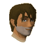
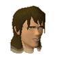
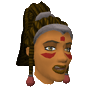
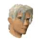
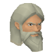
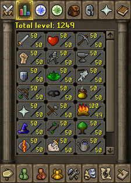

")
Capes of Accomplishment (Members)
Introduction | Getting a Skillcape | Skill Boosts | Skillcape Emotes
Trimmed Skillcapes | The Quest Point Cape | Losing your Skillcape
Trimmed Skillcapes | The Quest Point Cape | Losing your Skillcape
Introduction
The Cape of Accomplishment is a beautiful work of finery, made from costly materials and offered only to the masters of a skill. As such they are rarely seen and keenly sought by those without one, and worn with pride by those few who have earned the right.
Getting a Skillcape
To become the proud owner of a Cape of Accomplishment and hood, you must first have a level of 99 in a particular skill. Only hard work and persistence will get you to this level, but once achieved you are ready to purchase a Cape of Accomplishment and hood from one of the masters across RuneScape. There is only one master in each particular skill, and they all wear their very own Cape of Accomplishment and hood:
| Skillcape master | Location |
![[image]](../../img/main/kbase/npc/chathead/ajjat.gif) Ajjat - Master of Attack |
Within the Warriors' Guild in Burthorpe. |
|  Sloane - Master of Strength |
Within the Warriors' Guild in Burthorpe. |
![[image]](../../img/main/kbase/npc/chathead/harlan.gif) Melee instructor - Master of Defence |
Amongst the other combat instructors in Lumbridge. |
![[image]](../../img/main/kbase/npc/chathead/armour_salesman.gif) Armour salesman - Master of Ranging |
Within the Ranging Guild in Hemenster. |
![[image]](../../img/main/kbase/npc/chathead/brother_jered.gif) Brother Jered - Master of Prayer |
On the top level of the Monastery, north of the Barbarian Village. |
![[image]](../../img/main/kbase/npc/chathead/robe_store_owner.gif) Robe Store Owner - Master of Magic |
On the middle level of the Magic Guild in Yanille. |
![[image]](../../img/main/kbase/npc/chathead/aubury.gif) Aubury - Master of Runecrafting |
In the rune shop, in the centre of Varrock. |
![[image]](../../img/main/kbase/npc/chathead/tafani.gif) Surgeon General Tafani - Master of Constitution |
In the Duel Arena hospital, to the north of the Duel Arena. |
![[image]](../../img/main/kbase/npc/chathead/cap_n_izzy.gif) Cap'n Izzy No-Beard - Master of Agility |
Outside the Brimhaven Agility Arena, to the east of Brimhaven. |
![[image]](../../img/main/kbase/npc/chathead/kaqemeex.gif) Kaqemeex - Master of Herblore |
At the Altar of Guthix, to the north of Taverley. |
|  Martin Thwait - Master of Thieving |
Downstairs in the Toad and Chicken, in the Rogues' Den of Burthorpe. |
Master Crafter - Master of Crafting |
In the Crafting Guild, north of Rimmington. |
![[image]](../../img/main/kbase/npc/chathead/hickton.gif) Hickton - Master of Fletching |
Within the archery shop in Catherby. |
|  Kuradal - Master of Slayer |
In the Ancient Cavern, under Baxtorian Lake. |
![[image]](../../img/main/kbase/npc/chathead/hunting_expert.gif) Hunting Expert - Master of Hunter |
In her hut, south of the Feldip Hills. |
![[image]](../../img/main/kbase/npc/chathead/estate_agent.gif) Estate Agent - Master of Construction |
In the north-east of Varrock. |
![[image]](../../img/main/kbase/npc/chathead/mining_dwarf1.gif) Dwarf - Master of Mining |
Guarding the ladders down to the Mining Guild, in south-east Falador. |
![[image]](../../img/main/kbase/npc/chathead/thurgo1.gif) Thurgo - Master of Smithing |
In his hut, south of Port Sarim. |
![[image]](../../img/main/kbase/npc/chathead/master_fisher.gif) Master Fisher - Master of Fishing |
Outside the Fishing Guild, in Hemenster. |
![[image]](../../img/main/kbase/npc/chathead/head_chef.gif) Head Chef - Master of Cooking |
In the Cooks' Guild, west of Varrock. |
|  Ignatius Vulcan - Master of Firemaking |
Wandering in the forest, south of Seers' Village. |
![[image]](../../img/main/kbase/npc/chathead/woodcutting_tutor.gif) Wilfred - Master of Woodcutting |
Near the crossroads, north of Falador. |
![[image]](../../img/main/kbase/npc/chathead/martin_the_master_gardener.gif) Martin the Master Gardener - Master of Farming |
In the west of Draynor Village. |
![[image]](../../img/main/kbase/npc/chathead/pikkupstix.gif) Pikkupstix - Master of Summoning |
In the east of Taverley. |
|  Thok - Master of Dungeoneering |
In the camp south of Daemonheim. |
![[image]](../../img/main/kbase/npc/chathead/wise_old_man.gif) Wise Old Man - Master of Quest Points |
In his house in Draynor Village. |
The Cape of Accomplishment and hood come with a hefty price tag, however. The materials are expensive and only the finest crafters make them, so each of the masters require 99,000 gold to part with them.
The Skillcape Skill Boosts

Right-clicking on the Cape of Accomplishment and selecting 'Operate' will return the relevant skill level to 100, as will removing and then wearing the cape once the skill has gone down to 99.
The two exceptions to this rule are the Skillcape of Constitution and the Skillcape of Prayer. You will only be able to raise your maximum possible prayer and life point level once every minute.
Additionally, the Cape of Accomplishment carries a bonus to the combat stats. If the cape is trimmed (see further down) then the cape also holds a Prayer bonus.
| Item | Notes | ||||||||||||||||||
| Attack Bonuses | Defence Bonuses | Other | |||||||||||||||||
![[Image: Stab]](../../img/main/kbase/table_text/stab1.gif "Stab") |
![[Image: Slash]](../../img/main/kbase/table_text/slash1.gif "Slash") |
![[Image: Crush]](../../img/main/kbase/table_text/crush1.gif "Crush") |
![[Image: Magic]](../../img/main/kbase/table_text/magic1.gif "Magic") |
![[Image: Range]](../../img/main/kbase/table_text/range1.gif "Range") |
|
|
|
|
|
![[Image: Summoning]](../../img/main/kbase/table_text/summoning1.gif "Summoning") |
![[Image: Strength]](../../img/main/kbase/table_text/strength1.gif "strength") |
![[Image: Prayer]](../../img/main/kbase/table_text/prayer1.gif "Prayer") |
|||||||
![[image]](../../img/main/kbase/items/skillcapes/skillcape.gif) Skillcape Skillcape |
Boosts for skillcape, not hood | + 0 | + 0 | + 0 | + 0 | + 0 | + 9 | + 9 | + 9 | + 9 | + 9 | + 9 | + 0 | + 0 | |||||
The Skillcape Emotes
Owners of a Cape of Accomplishment will not just be able to impress their friends with their spiked shoulders and natty insignia; each Cape of Accomplishment also comes with its own, individual emote. These are accessible from the bottom of the emote tab.
Trimmed Skillcapes
Those who buy their Cape of Accomplishment with two or more skills at a level of 99 will find that they receive a 'trimmed' version of their skillcape. Looking slightly different, these capes also provide a boost to their wearer's Prayer bonus, adding +4 while the cape is worn.
The Quest Point Cape
![[image]](../../img/main/kbase/items/skillcapes/skillcape_worn.gif) The Quest Point Cape and hood are available to those who have completed every quest. These items can be bought from the Wise Old Man, inside his house in Draynor Village, for the princely sum of 99,000 gold.
The Quest Point Cape and hood are available to those who have completed every quest. These items can be bought from the Wise Old Man, inside his house in Draynor Village, for the princely sum of 99,000 gold.RuneScape is full of danger and those looking for champions to rid the world of danger, so it is inevitable that more quests will be released as the game progresses. Upon logging into the game after a quest update, those wearing a Quest Point Cape will receive a warning, telling them that the Quest Point Cape has unequipped itself.
The Quest Point Cape and hood will be unwearable until the quest has been completed, at which point you will find that the cape and hood will be equipable once again. If you have no inventory slots for the unequipped Quest Point Cape and hood then they will be stored in your bank. If this, too, is full then you will have to return to the Wise Old Man to retrieve them for free.
Note - To receive the Quest Point Cape you will need to have completed every element of each quest and have all the necessary quest points.
Losing your Skillcape
The Cape of Accomplishment and hood are valuable items, and will only be lost in extreme situations (or when deliberately destroyed). Getting a Cape of Accomplishment and hood back will require another trip to the master of your maxed skill, and then repaying the 99,000 gold to retrieve them.
For more information on capes, browse the Cape Guide.

More articles in
Miscellaneous Guides
|
|
|
Further Help
If this article does not help you, you may find the following sections of the RuneScape site helpful:
|
|